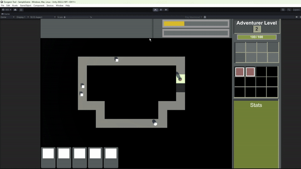
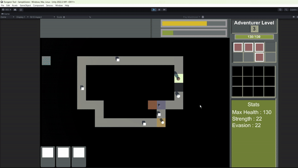
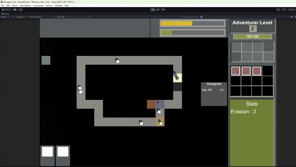
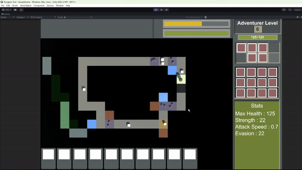

Loop Deck Dissertation
This post covers my masters dissertation
This project was made in Unity with C#, with the level generation being done using the tool I created in my previous post graduate studies.
The aim of this project was to create a game that focuses on the theoratical practices to increase player engagement, and applying that theory to using mechanics to increase player engagement. These mechanics
were then applied to the roguelike genre due to its reliance on replayability and keeping the player's engagement.
Card Placing

Half of the interactions in this game comes from the cards, placing cards can change which minions spawn on the board, give combat special effects, or apply permanent buffs.
Downside of this is after a certain number of cards is placed, the boss will spawn. The player will have to balance defence and being prepared.
Gaining Cards

The player gains cards from killing adventurers or from their minions dying, these are dropped based off a loot table that is generated from the deck that the player creates.
Card Data
Cards are created through scriptable objects. TALK MORE
Combat

Combat is initated by entering a tile that occupies an enemy. The combat occurs in an autobattler style. TALK MORE
Adventurers
Adventurers act as the enemies of the game, they will make their way around the dungeon fighting your minions to defeat you. If the number of cards placed to spawn the boss
then an adventurer party will spawn, if defeated the player will win the level.
Equipment

Equipment allows for players to increase their characters stats, and prepare for the boss. This also gives a sense of progression via powering up.
Boss Fight

Equipment allows for players to increase their characters stats, and prepare for the boss. This also gives a sense of progression via powering up.